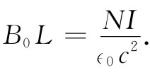
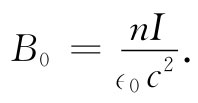

图13-7 在载有电流I的一根长直导线外面的磁场
通过求出一根导线附近的磁场，我们就能够举例说明安培定律的应用。我们要问：在一条圆形截面的长直导线外面的场如何？我们将假定某种东西，它可能不十分明显、但无论如何却是真的：即B的场线以闭合圆周环绕着该导线。如果我们做出这一假定，那么安培定律，即式（13.16），便会告诉我们场有多强。根据这一问题的对称性，在导线的一个同心圆上的所有各点，B就具有相同的大小（见图13-7）。于是，我们能够很容易地算出B·ds的线积分，只不过是B乘以该圆周罢了。设r为圆周半径，则
∮B·ds=B·2πr.
穿过该回路的总电流就是导线中的电流I，因而
磁场的强度与r反比地逐渐减弱，r是距导线轴心的距离。倘若我们乐意，也可把式（13.17）写成矢量形式。记住B与I和r两者都垂直，因而有
我们已将因子1/（4π∈0 c2 ）提了出来，因为它经常会出现。值得记住的是，这一因子准确地等于10-7 （在m·kg·s制中），因为一个像式（13.18）那样的方程式是用来定义 电流单位安培的。在距离1A电流1m远处的磁场为2×10-7 Wbm-2 。
由于电流产生了磁场，所以它也将施力于附近另一根同样载有电流的导线上。在第1章中，我们就曾描述过作用于两载流导线间的力的一个简单演示，如果两导线互相平行，则每根导线将垂直于由另一导线所产生的磁场。当两电流处在相同方向时，两线将互相吸引；当电流的方向相反时，则两线互相排斥。
让我们举另一个例子，它也可以用安培定律来加以分析，只要我们加进关于场的某种知识。假设有一个长导线圈绕成的紧密螺旋线，其两种截面如图13-8所示。这样的线圈称为螺线管 。从实验上我们观察到：当一螺线管相对于其直径十分长时，则管外的场与管内的场相比将十分微小。仅仅利用这一事实，再加上安培定律，便可以求出管内场的大小。
图13-8 长螺线管的磁场
由于场存在 其里面（而且散度为零），那么表示它的一些场线就必然平行于管轴，如图13-8所示。假定这是事实，便可利用图上所示的那条矩形“曲线”Γ来运用安培定律。这条回路先在螺线管内沿着那里的场，例如B0 ，行了一段距离L，然后垂直于场而行，再沿着管外回来，而那里的场则可以忽略。对于这么一条曲线，B的线积分正好是B0 L，而它应当等于1/（∈0 c2 ）乘以穿过Γ的总电流，如果在长度为L的螺线管上共有N匝的话，则总电流为NI。这样，我们就有

或者，若令n为单位长度 螺线管的匝数（即n=N/L），则得
 （13.19）
当到达螺线管一端时，B线会怎么样呢？大概的情形是：它们多少有点散开，并兜回到另一端，再进入螺线管，如图13-9所示的那样。像这样的场恰好就是在一根条形磁铁外面所观察到的。但磁铁到底是 什么东西？我们的方程表明，B来自电流。可是我们知道，一根普通铁棒（既没有电池组也没有发电机）也能产生磁场。你也许会期望，在式（13.12）或（13.13）的右边还应有其他一些项来代表“磁铁密度”或诸如此类的量，但是却没有这样的项。我们的理论说：铁的磁效应乃来自某些内部电流，而这些电流则已用j的项来对付了。
图13-9 在螺线管外面的磁场
从基本观点上看，物质是十分复杂的——正如我们以前在试图理解电介质时所见到的那样。为了不致扰乱目前的讨论，我们打算以后再来详细处理像铁那样的磁性材料的内部机制。暂时你们得接受所有磁性都来自电流，而在永磁体中就有永久性的内部电流存在。对铁来说，这些电流来自绕其本身的轴自旋的电子。每一电子既然带有这样的自旋，便相当于一个小环行电流。当然，一个电子不会产生多么大的磁场，但在通常一块物质中就有无数亿个电子。平常它们都在作自旋并各自指向任意方向，因而没有任何净效应发生。奇迹出现在寥寥几种像铁那样的物质中，其中有相当大一部分电子会绕相同方向的轴自旋——对铁来说，每一原子中就有两个电子参加这种协同运动。在一根条形磁铁中会有许许多多个电子全都在同一方向自旋，因而，正如我们将会见到的，其总效应就相当于环绕该磁棒表面的电流（这与我们以前对电介质所发现的情况很相似——即一块均匀极化的电介质相当于在其表面上有电荷分布）。因此，一根磁棒与一个螺线管等价并不是偶然的。